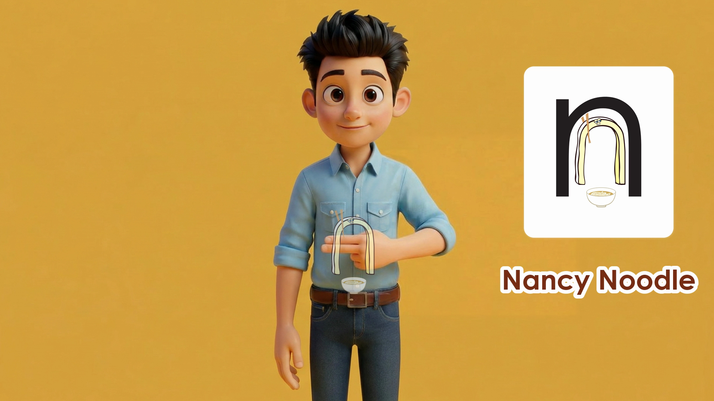
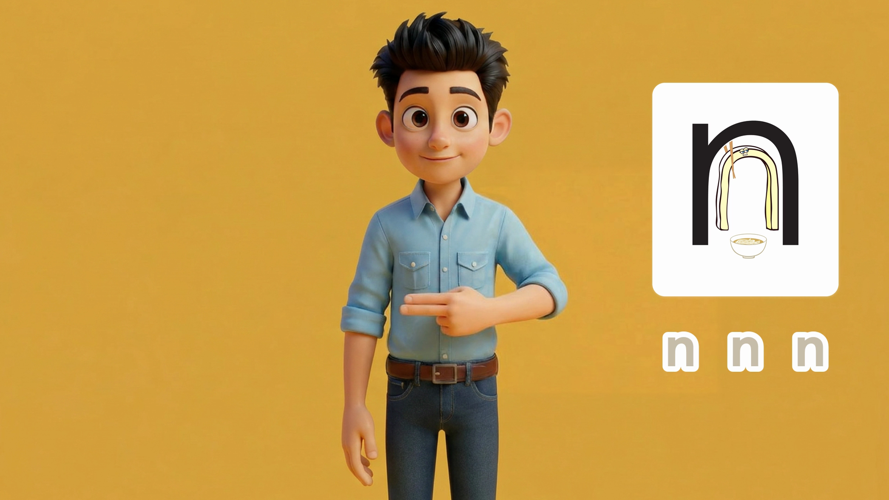
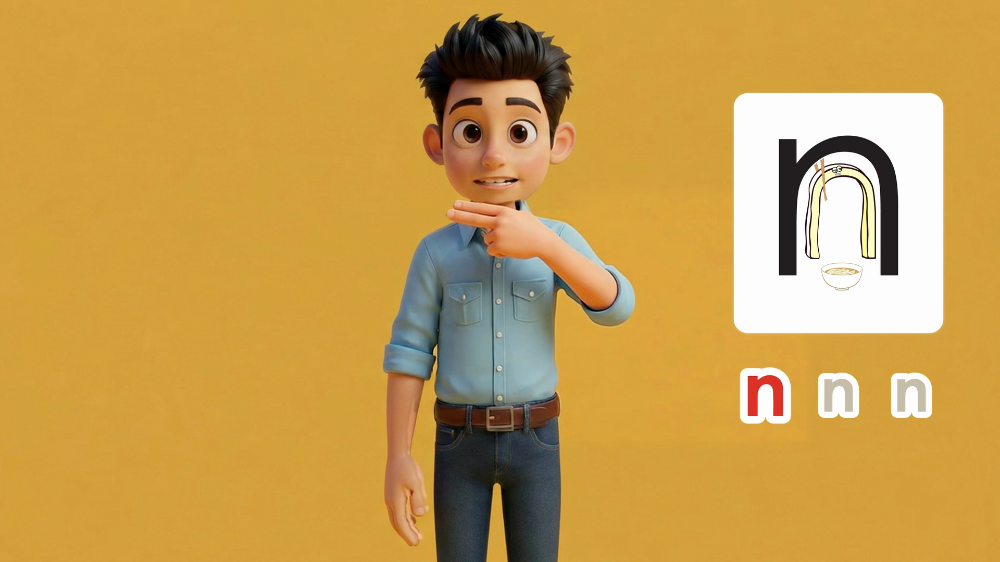
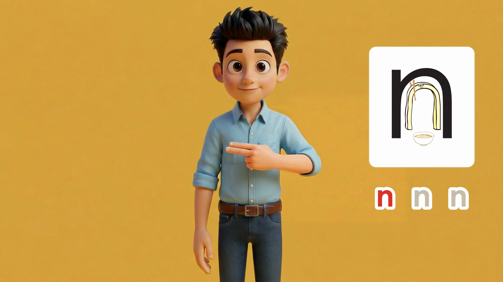
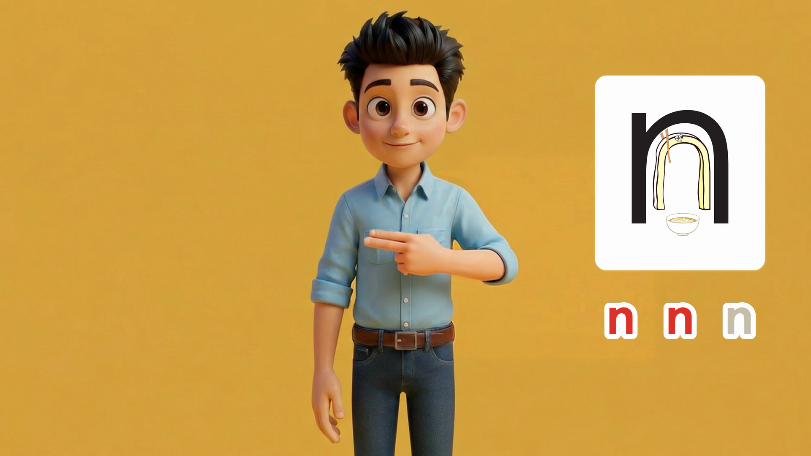
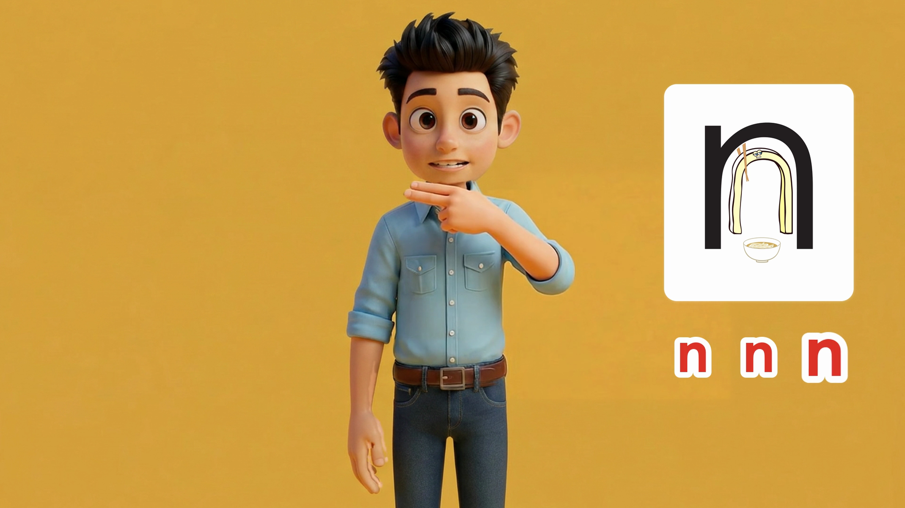
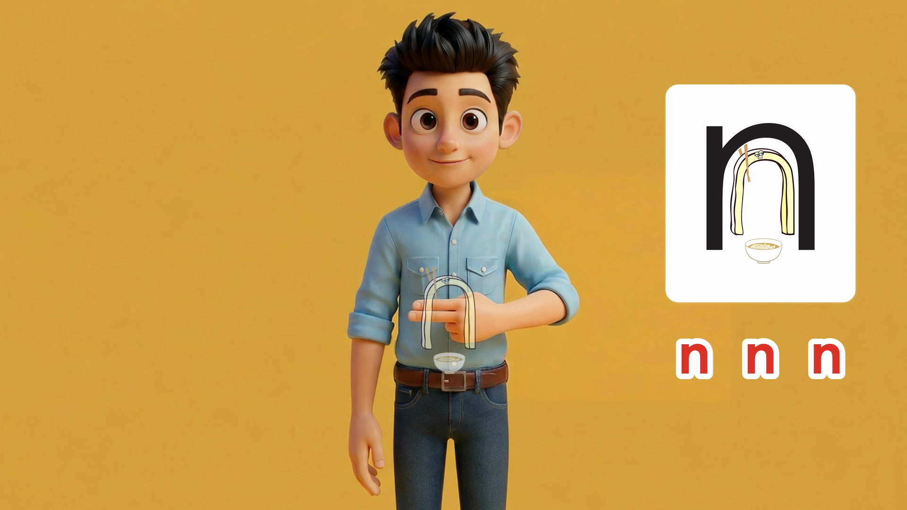

1 · 動画
音を出して、見てください。
名前 → /n/ ×3（10.00秒）確かめたコマ
確かめたコマ（原寸）
画像を押すと原寸で開きます














作成：フォニ丸pi
PROS PHONICS / 成果物 · N・v8
蜂谷さんのご依頼（11/6 7:10、訂正版）で、M と同じ型にそろえました。名前 約2.0秒 → /n/ を 3.0秒・5.5秒・8.0秒 → 止めてフェード、全体10秒です。手と口の速さは v7 のままです。







| 文字 | 判定 | 中身 |
|---|---|---|
| N | ○ | 長さ: 10.00秒・240コマ（M v28 と同じ）。声の位置: 名前 0.45秒、/n/ 3.0秒・5.5秒・8.0秒（M と同じ）。 |
| N | ○ | 手: 1回ごとの動き（お腹→あご 0.45秒、あごで0.8秒止め、あご→胸 0.4秒、胸→あご 0.4秒、最後のあご→お腹 0.55秒）は v7 と同じ速さです。/n/ の間が1.6秒→2.5秒に長くなった分（0.9秒）は、胸の位置で止まって待ちます。 |
| N | ○ | 口: 閉じた口 → 少し開いた口（5コマ）→ n_2（15コマ）→ 少し開いた口（5コマ）→ 閉じた口。v7 と同じです（3回ともコマを数えて確認）。1回目は 2.96〜3.12秒 少し開き、3.17〜3.75秒 n_2、3.79〜3.96秒 少し開き。 |
| N | ○ | 声・口・手: 手は音の0.1秒前にあごに着き、口は音の0.15秒前から開き始めます。v7 と同じずれ方で、3回とも同じです。 |
| N | ○ | Nancy: はじめのお腹では 2.05秒まで出し、手が動き出す前の 2.30秒までに消し切ります。最後は手がお腹に戻った0.2秒後（9.45秒）から出します。白いフェード（最後の0.3秒）は v7 と同じです。 |
| N | △ | 新しい生成は使っていません。v7 の合成スクリプトの時間割だけを変えました。 |
| N | △ | 同じ動きの所を v7 と比べると、絵の差は平均1/255以下です（腕・顔・服・口の絵は v7 と同じ）。 |
| N | △ | sha256 先頭 984062b1a499 |
ご意見は phonics-seisaku チャンネルで @phonimaru-pi を付けて書いてください（例: @phonimaru-pi B の手をもう少しゆっくり）。
N_nancy_noodle_v8.mp4 sha256 984062b1a499